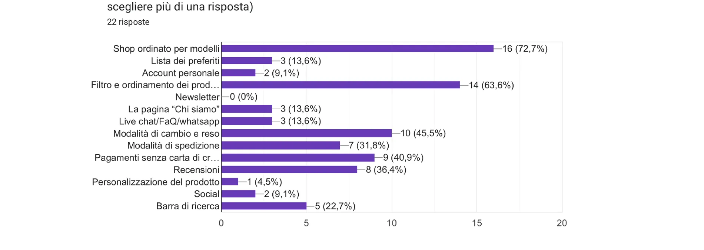
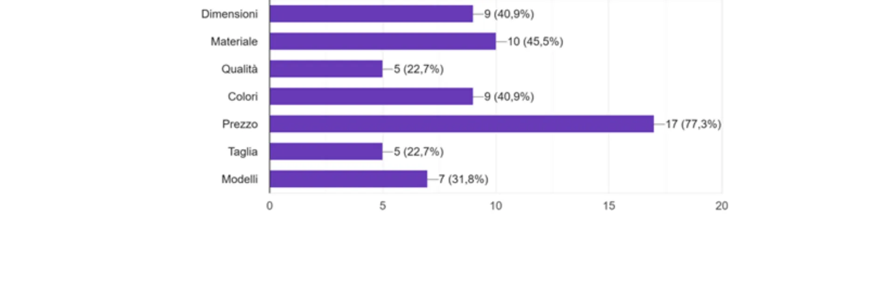
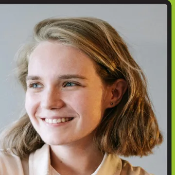
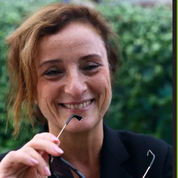
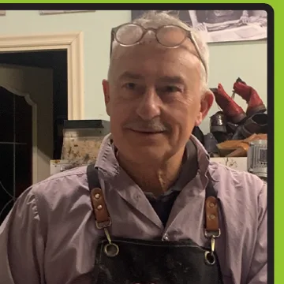
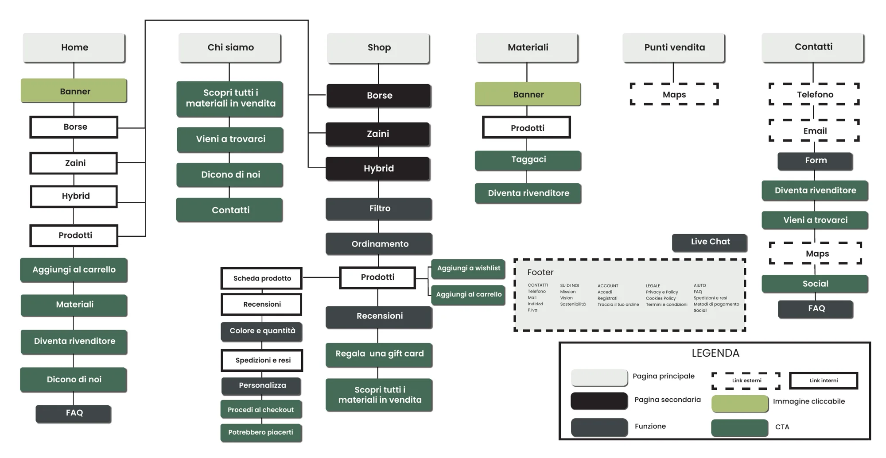
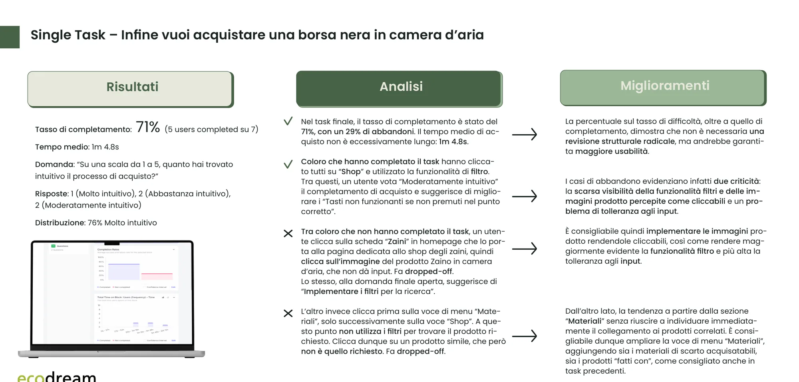
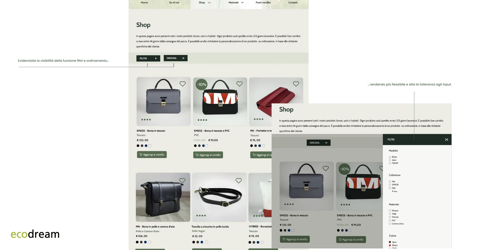

Contrasto
ProblemaTesto grigio su bianco, quasi illeggibile.
SoluzioneAlmeno 4,5:1 di contrasto.
Borse e zaini nati da materiali di scarto: ho ripensato il loro sito, dal wireframe al test con gli utenti.

Il cliente
Ecodream Design vende borse, zaini e accessori fatti con materiali recuperati: pelle, PVC, tessuti. Il sito però non era all'altezza del progetto.
Ho analizzato la versione esistente con le 10 euristiche di Nielsen e con le WCAG 2.2, poi ho intervistato 22 persone: da lì sono nati quattro personas e un nuovo sito.
Rendere accessibile a tutti un modo di consumare più consapevole, dando nuova vita ai materiali.
Un mondo in cui il design rispetta le persone e l'ambiente, e la creatività nasce dal recupero.
01 · Discovery
Analisi euristica con le 10 regole di Nielsen, competitor, ricerca sul target e una survey a 22 persone: da qui nascono quattro personas e i loro percorsi.
Ecodream Design è un brand indipendente di moda sostenibile: borse, zaini e accessori da materiali di recupero, produzione artigianale e Made in Italy, con uno showroom a Borgo San Lorenzo, nel Mugello. Aderisce a slow fashion, upcycling e alla campagna WearMe30Times.
Rispetto ai competitor mancano barra di ricerca, lista preferiti, CTA accattivanti, filtri, recensioni, assistenza e pagamenti alternativi. Il punto di forza è la storia d’impresa e la descrizione dei materiali.


Personas
Organizzatrice di eventi a Lugano. Ha un blog su cinema e sostenibilità.

Studentessa di Filosofia a Milano. Cerca uno zaino prima di partire per la Cambogia.

Libraia a Firenze. Vorrebbe un regalo per la figlia e comprare con calma.

Calzolaio a Venezia. Cerca materiali di recupero e pensa a diventare rivenditore.
In sintesi
Il 76% degli accessi arriva da cellulare, dove l’acquisto era dispersivo. Prima ho ripensato la struttura, poi l’interfaccia.
Un e-commerce difficile da esplorare
Un’esperienza più semplice, orientata all’acquisto
Ripensare la struttura prima dell’interfaccia
02 · Wireframe
Dai pain points del sito esistente alla nuova sitemap, poi le pagine in mobile e desktop.

03 · User test
Test remoto e senza moderatore su Useberry, con 8 partecipanti reclutati su Facebook, Discord, Reddit e LinkedIn. Sette hanno concluso il test.


04 · User interface desktop
Color palette, tipografia, Griglia a 12 colonne, margini da 64 px, gutter da 16 px.
05 · User interface mobile
Stesso UI kit, ripensato per il pollice: filtri a scomparsa, schede prodotto verticali, menu essenziale.
06 · Accessibilità
Sei pagine del sito Ecodream, un controllo con le WCAG 2.2 e il Color contrast checker. Ecco cosa non funzionava e come lo sistemerei.
ProblemaTesto grigio su bianco, quasi illeggibile.
SoluzioneAlmeno 4,5:1 di contrasto.
ProblemaImmagini cliccabili che non sembrano tali, link grigi in corsivo.
SoluzioneColore e formato riconoscibili, nomi chiari.
ProblemaFoto senza testo alternativo: per lo screen reader non esistono.
SoluzioneTesto ALT coerente, senza ripetizioni.
ProblemaSito in italiano, titoli e link in inglese.
Soluzione«Traduzione» che traduce davvero.
ProblemaUn solo blocco, senza titoli né spazi bianchi.
SoluzioneH1, H2, H3 in ordine e più aria.
ProblemaLunghi, solo mouse, errori segnalati da un asterisco.
SoluzionePiù corti, da tastiera, errori spiegati.
ProblemaOltre 50 prodotti senza filtri né ricerca.
SoluzioneFiltro, ordinamento e barra di ricerca.
ProblemaCarrello e link piccoli e troppo vicini.
SoluzioneIcone grandi e ben distanziate.
ProblemaMateriali non si comprano lì; niente breadcrumb.
SoluzioneAcquisto ovunque e breadcrumb.
ProblemaNessuna mail generica, telefono o chat.
SoluzioneMail, telefono e chat live.
ProblemaNiente riepilogo ordine né info su spedizioni e resi.
SoluzioneRiepilogo e info a ogni passo.
ProblemaNomi e codici prodotto vaghi, in colori deboli.
SoluzioneNomi descrittivi, più grandi e contrastati.
I quattro principi WCAG
07 · Assistente AI
Alcuni attriti della navigazione mobile si sciolgono con una risposta al momento giusto. Ho progettato un chatbot che risponde, consiglia e accompagna.
Risposte naturali su spedizioni, resi, materiali e acquisto.
Domande contestuali per restringere la scelta.
Spiegazioni sintetiche, meno carico cognitivo.